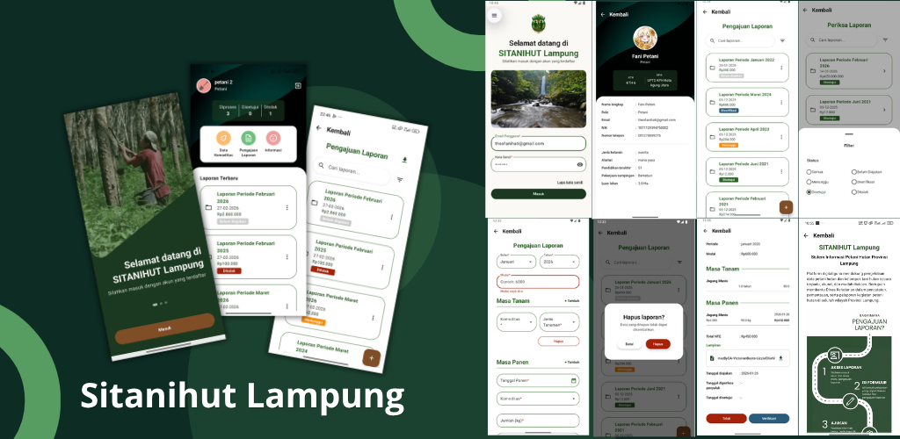
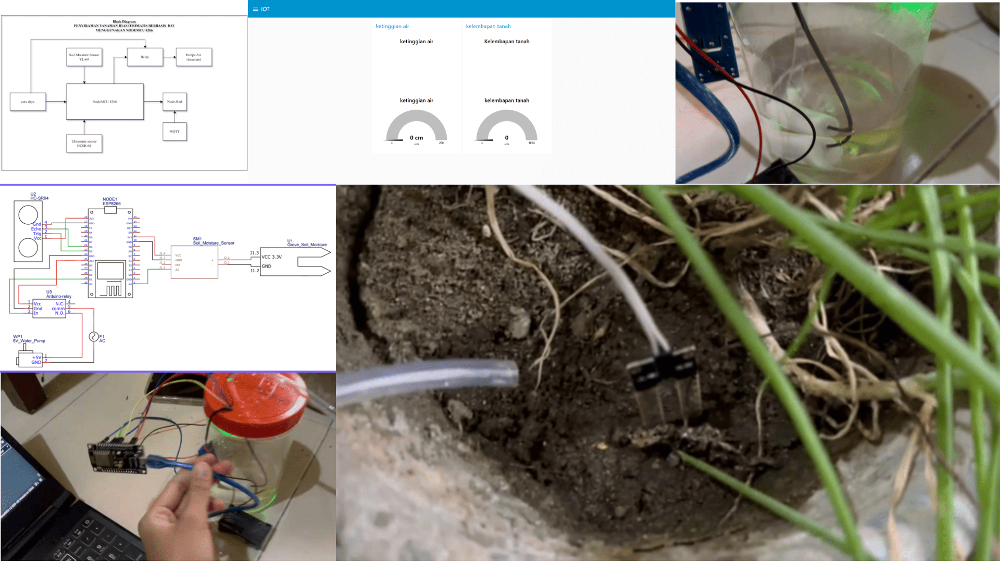
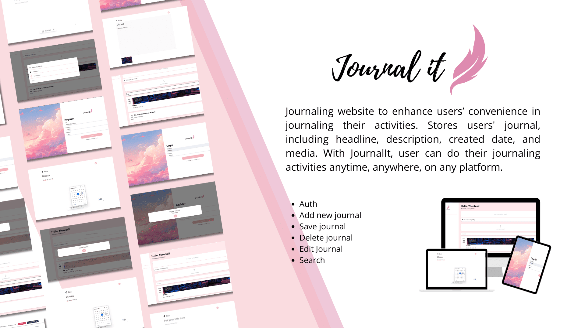

Hello, I'm
Theofani Hati
Kusumawardani
"If your action inspires others to dream more, learn more,
do more, and become more, you are a leader"
- Dolly Parton
About Me
Hi! I'm an Indonesian-based
Software Engineer focusing
primarily on mobile development. My core stack revolves around
Kotlin and Jetpack Compose, though I'm always happy to explore
new tools and technologies when the project calls for it.
Beyond mobile, I enjoy building out the web using Next.Js. I
like turning ideas and design into clean and responsive
interfaces.
I'm currently looking for onsite and remote opportunities where
I can learn, build, and work with both national and global
teams. When I'm away from the keyboard, you'll probably find me
exploring new novels, trying new recipes, or just enjoying a
quit day offline

Olla cute fellas! 🫶🏻
Projects

Farmers Planting & Harvesting App
An offline-first Android application built for the Dinas Kehutanan Provinsi Lampung for data reporting in areas with limited connectivity, automatically synchronizing once an internet connection restored

Plant Watering System
Automated plant watering system utilizing IoT sensors and microcontrollers ESP8266. Using the MQTT protocol for real-time data communication pipeline with a monitoring dashboard to visualize data.

Farmers Planting & Harvesting App
Monolithic full-stack web for digital journaling with Laravel + Tailwind. Built authentication and implemented seamless features for daily text entries and multimedia file uploads.